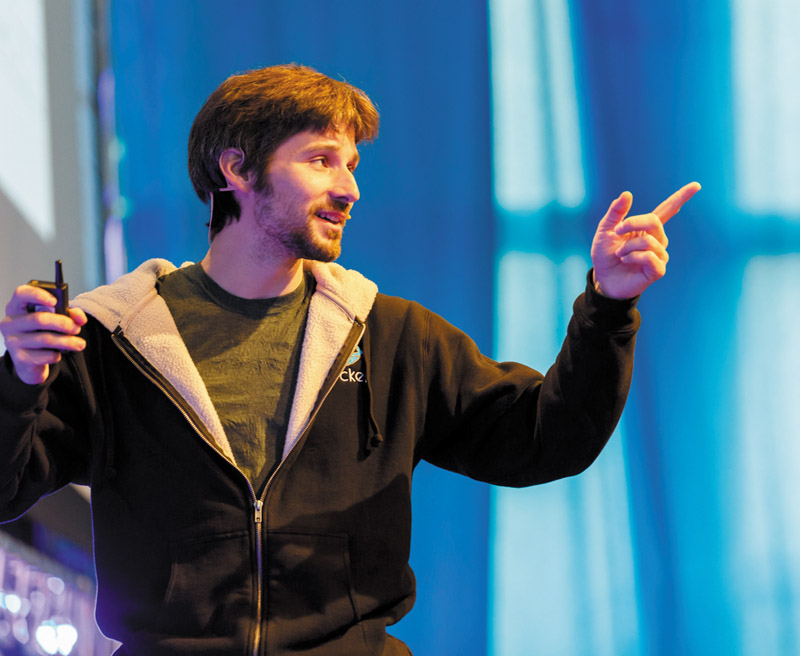

Карьера.
поха dotCloud и создание Docker2007–2008: Совместно с университетскими друзьями Соломон основал стартап dotCloud в Париже — платформу-как-услугу (PaaS), ориентированную на разработчиков. В 2010 году проект прошел через престижный американский акселератор Y Combinator.2013: Внутренняя технология dotCloud, предназначенная для управления контейнерами Linux, переросла в самостоятельный open-source проект Docker. После ошеломительного успеха Хайкс провел пивот бизнеса, и всю компанию переименовали в Docker, Inc..Роли в Docker: С момента основания компании Хайкс занимал пост CEO (до 2013 года), а затем перешел на позицию CTO (технического директора) и главного архитектора. Он также стоял у истоков создания Cloud Native Computing Foundation (CNCF).Уход из Docker: В марте 2018 года Соломон объявил о своем уходе из операционной деятельности компании, объяснив это тем, что Docker вырос в крупного корпоративного вендора, и на позицию СТО требуется менеджер с другим типом опыта. Он остался в совете директоров.